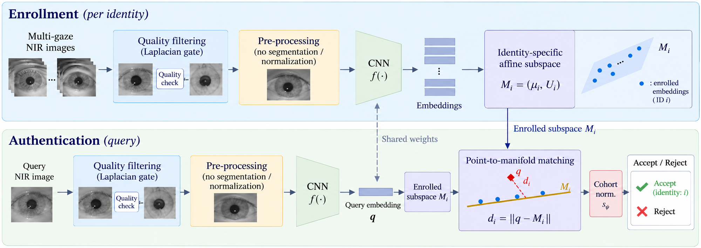
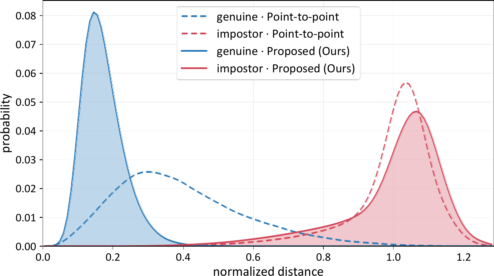

Electronics and Telecommunications Research Institute (ETRI), Daejeon, Republic of Korea
★Equal contribution †Corresponding author
Recent deep learning-based iris recognition methods encode iris images as high-dimensional embeddings and typically rely on point-to-point matching. Under off-angle acquisition, however, gaze-induced appearance changes increase substantial intra-class variation, separating embeddings of the same identity and degrading conventional point-to-point matching.
In this paper, we propose GazeMM, an identity-specific gaze manifold-based iris matching framework that explicitly models such gaze-induced variation. Given multi-view enrollment embeddings, GazeMM constructs a low-dimensional affine subspace for each identity and matches a query using its orthogonal residual distance to the subspace, followed by cohort-based local score normalization.
Experimental results revealed that GazeMM achieves an average equal error rate of 0.23% under off-angle conditions, while maintaining competitive performance under frontal acquisition. Moreover, it remains effective across different iris feature extractors, demonstrating its generality.
Evaluated on twelve public iris datasets (four off-angle, eight frontal) with subject-disjoint 2-fold cross-validation over three fixed seeds.
GazeMM changes the matching stage, not the feature extractor. The insight is that gaze-induced intra-class variation does not scatter isotropically — it concentrates along a handful of directions in the embedding space. So instead of comparing a query against isolated enrollment points, we model each identity's enrollment set as a low-dimensional affine subspace and measure how far the query falls off that subspace.

Blurred frames are rejected by a Laplacian-variance threshold set in the log domain from the median and MAD. Surviving NIR periocular images are padded, resized to 224×224 and encoded by a ResNet-34 into $L_2$-normalized 512-d embeddings — no segmentation, no polar normalization.
The multi-gaze enrollment embeddings of each identity are centered on their mean $\mu_i$, and the top $k$ eigenvectors of the centered scatter form an orthonormal basis $U_i$ spanning the dominant intra-class directions.
A query is scored by its orthogonal residual to each subspace, then normalized against cohort means so that a single global threshold works across queries and identities.
For identity $i$ with $N$ enrollment embeddings $\{x_n\}_{n=1}^{N}$, we form the mean and the centered feature matrix, and take the leading eigenvectors of $A_iA_i^{\top}$ as the basis $U_i$. The effective dimension is capped at $\min(k,\,N-1,\,D)$; the paper uses $k=3$.
$$\mu_i = \frac{1}{N}\sum_{n=1}^{N} x_n, \qquad A_i = \big[\,x_1-\mu_i,\ \dots,\ x_N-\mu_i\,\big], \qquad M_i = (\mu_i,\,U_i)$$
A query $q$ is projected onto $M_i$, and the residual — the component of $q-\mu_i$ that the learned intra-class directions cannot explain — becomes the distance. Variation that merely moves the query along the gaze manifold no longer costs anything.
$$d_i \;=\; \lVert q - p_i \rVert_2 \;=\; \big\lVert (\mathbf{I}_D - U_iU_i^{\top})(q-\mu_i) \big\rVert_2, \qquad p_i = \mu_i + U_iU_i^{\top}(q-\mu_i)$$
Residual scale drifts across queries and enrolled subspaces, which makes one global threshold suboptimal. Adapting local scaling, each raw distance is divided by the geometric mean of its query-side and subspace-side cohort means.
$\bar{d}_i$ and $\bar{d}_j$ are the mean residuals over the subspace and query cohorts $\mathcal{C}_q,\ \mathcal{C}_M$.
$$s_{ij} \;=\; \frac{d_{ij}}{\sqrt{\bar{d}_i\,\bar{d}_j}}$$
Table 1. Performance averaged over four off-angle and eight frontal datasets (%). Baselines are grouped as classical, hybrid and deep-learning methods. Bold and underlined denote the best and second-best results.
| Method | Off-angle (avg.) | Frontal (avg.) | ||||||
|---|---|---|---|---|---|---|---|---|
| EER | FRR | Rank-1 | FTE | EER | FRR | Rank-1 | FTE | |
| Classical | ||||||||
| WAHET | 35.83 | 95.28 | 10.60 | 0.0 | 9.28 | 33.02 | 90.17 | 0.0 |
| USITv3 | 33.23 | 81.71 | 50.11 | 0.0 | 11.12 | 20.22 | 87.34 | 0.0 |
| OSIRIS | 24.18 | 82.92 | 62.06 | 9.7 | 4.62 | 11.67 | 97.45 | 1.4 |
| Hybrid | ||||||||
| HDBIF | 26.25 | 68.27 | 77.05 | 0.0 | 1.41 | 2.88 | 99.78 | 0.0 |
| WCI | 7.10 | 45.70 | 87.07 | 39.6 | 0.17 | 0.22 | 99.94 | 16.6 |
| Deep learning | ||||||||
| DGR | 17.63 | 72.59 | 83.96 | 20.4 | 3.18 | 12.26 | 99.23 | 1.4 |
| UE-UGCL | 11.98 | 66.29 | 84.10 | 20.4 | 10.48 | 50.99 | 89.95 | 1.4 |
| Maxout-BA | 22.13 | 81.14 | 79.29 | 20.4 | 15.90 | 66.05 | 82.69 | 1.4 |
| ArcIris | 16.51 | 59.42 | 83.97 | 1.2 | 0.64 | 1.16 | 99.84 | 0.0 |
| TripletIris | 15.62 | 82.13 | 81.96 | 0.0 | 0.83 | 3.14 | 99.79 | 0.0 |
| GazeMM (Ours) | 0.23 | 8.18 | 94.12 | 2.8 | 0.34 | 1.87 | 99.87 | 2.6 |
Samples that fail to enroll are excluded from the matching pool, so reported numbers for methods with a high FTE may be optimistic — WCI, the strongest baseline off-angle, discards 39.6% of samples against GazeMM's 2.8%.
Table 2. EER and FTE on the four off-angle datasets (%): EyeMovement (EM), OpenEDS (OED), CASIA-Iris-Degradation (Deg) and CASIA-Iris-Africa (Afr).
| Method | EM | OED | Deg | Afr | ||||
|---|---|---|---|---|---|---|---|---|
| EER | FTE | EER | FTE | EER | FTE | EER | FTE | |
| Classical | ||||||||
| WAHET | 35.98 | 0.0 | 38.32 | 0.0 | 29.23 | 0.0 | 39.80 | 0.0 |
| USITv3 | 33.14 | 0.0 | 37.59 | 0.0 | 25.56 | 0.0 | 36.66 | 0.0 |
| OSIRIS | 22.94 | 32.8 | 23.27 | 1.8 | 27.30 | 1.3 | 23.21 | 3.0 |
| Hybrid | ||||||||
| HDBIF | 27.35 | 0.0 | 28.49 | 0.0 | 26.61 | 0.0 | 22.57 | 0.0 |
| WCI | 12.82 | 39.3 | 6.27 | 26.3 | 5.06 | 25.1 | 4.25 | 67.7 |
| Deep learning | ||||||||
| DGR | 14.10 | 39.1 | 15.40 | 25.4 | 17.26 | 13.8 | 23.79 | 3.3 |
| UE-UGCL | 10.70 | 39.1 | 11.61 | 25.4 | 13.16 | 13.8 | 12.45 | 3.3 |
| Maxout-BA | 15.10 | 39.1 | 27.62 | 25.4 | 18.64 | 13.8 | 27.16 | 3.3 |
| ArcIris | 15.64 | 2.8 | 16.20 | 0.1 | 16.54 | 1.6 | 17.69 | 0.1 |
| TripletIris | 14.94 | 0.0 | 11.98 | 0.0 | 17.98 | 0.0 | 17.60 | 0.0 |
| GazeMM (Ours) | 0.00 | 1.5 | 0.57 | 0.3 | 0.25 | 3.0 | 0.10 | 6.3 |
Table 3. Matching scheme swapped per feature extractor, averaged over the four off-angle datasets (%). Manifold matching improves every encoder it is attached to, without retraining or architectural change.
| Feature extractor | Point-to-point | Proposed matching (Ours) | |||
|---|---|---|---|---|---|
| EER | FRR | EER | FRR | ||
| UE-UGCL | 11.98 | 66.29 | → | 0.67 | 14.16 |
| Maxout-BA | 22.13 | 81.14 | → | 1.50 | 21.39 |
| ArcIris | 16.51 | 59.42 | → | 0.49 | 13.35 |
| TripletIris | 15.62 | 82.13 | → | 0.78 | 15.09 |
| ResNet-34 (Ours) | 2.50 | 32.71 | → | 0.23 | 8.18 |
Table 4. Component-wise ablation on CASIA-Iris-Degradation (%). Replacing manifold matching with point-to-point matching costs the most by a wide margin, confirming it as the dominant component.
| Variant | Manifold matching |
Score norm. |
Quality filtering |
EER | FRR |
|---|---|---|---|---|---|
| Point-to-point matching | — | ✓ | ✓ | 4.98 | 45.41 |
| w/o Score normalization | ✓ | — | ✓ | 0.60 | 4.49 |
| w/o Quality filtering | ✓ | ✓ | — | 0.29 | 2.00 |
| GazeMM (Ours) | ✓ | ✓ | ✓ | 0.25 | 1.23 |

@inproceedings{min2027gazemm,
title = {GazeMM: Robust Off-Angle Iris Recognition via Gaze Manifold Matching},
author = {Min, Yewon and Kim, Youngwook and Park, Jiyoung and Ryu, Moonwook and Lee, Jun Seong},
booktitle = {IEEE International Conference on Acoustics, Speech and Signal Processing (ICASSP)},
year = {2027}
}